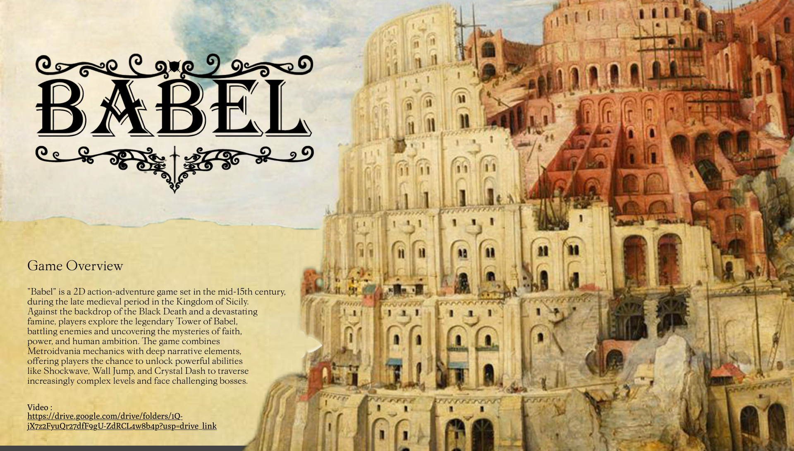

Event coverage experience under timing, movement, and delivery constraints.
Athletics VideoEvent CoverageProduction Support
Game-day production support
Following motion, finding the moment, cutting the energy.
This portfolio focuses on production work for fast-moving environments: live events, action timing, camera movement, editing rhythm, footage organization, and fast technical learning.
Editing rhythm for short-form highlights, narrative beats, and audience attention.
Action awareness from games, video work, drone framing, and portrait direction.
Production support mindset: organized, coachable, and ready to learn workflows.
Motion work
Action, timing, and live moments.
My motion work combines live-event coverage, social-video editing, movement readability, and organized footage delivery.

Live Eventcoverage
Student Union Photography Coordinator
Campus event documentation: anticipation, framing, movement, and reliable delivery under live constraints.
Open case study
Action Pacingchase / pressure
Ninja
Action-adventure design training around pursuit, timing, movement readability, and player attention.
Open case study
Movement Designtraversal
Fit to Pass
A platformer focused on readable motion, timing windows, and level flow.
Open case studyProduction support lanes
Where I can contribute first.
These are concrete production lanes I can support while learning sport-specific tools, standards, and game flow.
Practice coverage
Capture clean clips, repetitions, environment, and player/team energy.
Game-day b-roll
Fans, entrances, bench energy, detail shots, and atmosphere.
Social highlights
Short cuts with rhythm, clarity, and platform-aware pacing.
Broadcast assist
Learn equipment and support live/in-venue workflows.
Footage archive
Sort, label, select, and preserve media for reuse.
Selected production work
Video, motion, and visual timing.
These projects show camera awareness, editing rhythm, spatial composition, and action readability across live events, film, games, and photography.

Videomood + sound
The Pawn
Video production awareness around sound, tone, timing, and finished delivery.
Open case study
Dramaedit rhythm
Breaking the Cycle
Longer-form storytelling and editing rhythm for social critique and audience attention.
Open case study
Photographycomposition
Camera Photography
Still-image control that supports b-roll, details, portraits, and event coverage.
Open case study

Cinematic UXUnreal
Echo of Crash
Scene reading, tension, and emotional pacing in an interactive experience.
Open case study
Aerial / Spacescale
Drone Photography
Spatial composition and large-environment visual rhythm.
Open case studyGear and growth areas
Useful now, adaptable next.
Capture
- Canon EOS R7 and Canon EOS R5 Mark II.
- Smartphone video for fast access.
- DJI RS-series stabilizer and lighting experience.
Sound and post
- DJI wireless/lavalier microphones.
- Premiere Pro, After Effects, Lightroom, Photoshop, Audition, Media Encoder, Final Cut Pro.
- Footage sorting, selection, archiving, and quick social cuts.
Learning targets
- College sports rules and game flow.
- Broadcast camera positions and in-venue video procedures.
- Dreamcatcher/Xpression-style production systems if used by the team.
Action portrait sequence
Live-event timing, subject direction, and readable movement.
A broader convention archive of 20+ photographed subjects is distilled into 4 action-oriented images across 3 character groups, emphasizing movement anticipation, body language, decisive framing, and direction in a crowded live environment.


Contact
Athletics video and event production support.
This portfolio highlights live-event coverage, action timing, editing rhythm, and organized production support.
Email: jasonwang792@gmail.com